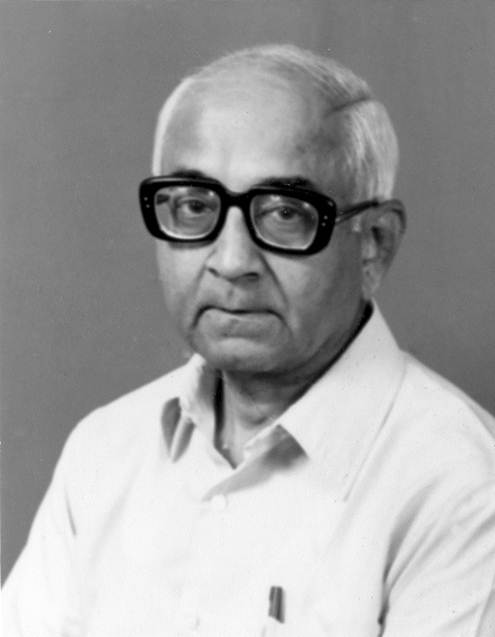

Centenary Workshop in honour of Prof. R. Narasimhan
Tata Institute of Fundamental Research (TIFR) was Professor Narasimhan’s primary place of work, where he pioneered early computer science research and development in India. The workshop is being organised at TIFR’s main campus in Mumbai to commemorate his distinguished career and enduring legacy on his birth centenary.
The two-day event brings together leading researchers from India and abroad across core domains of computing. The programme combines technical sessions, a public lecture on trustworthy AI, a student poster session, and a commemorative session with reflections from his former colleagues, students, and collaborators.

Prof. R. Narasimhan (1926 - 2007)
“The technologically literate environment of TIFR was an essential facilitating factor in undertaking cutting-edge work in computer science.”
R. Narasimhan, Men, machines, and ideas, 1999